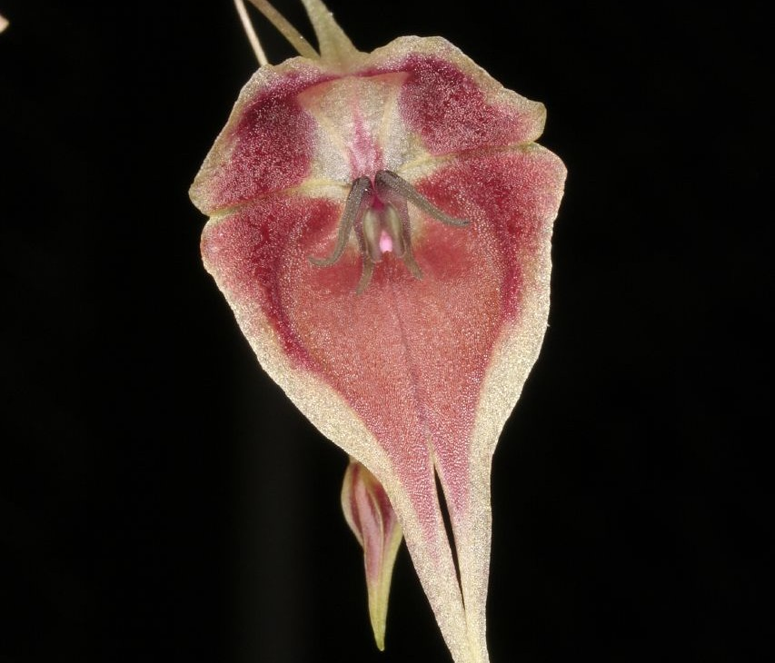
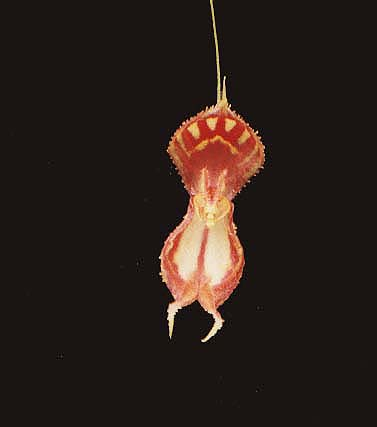
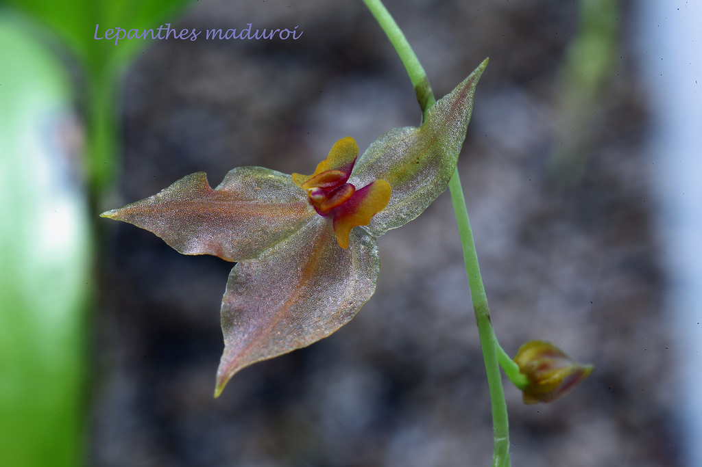
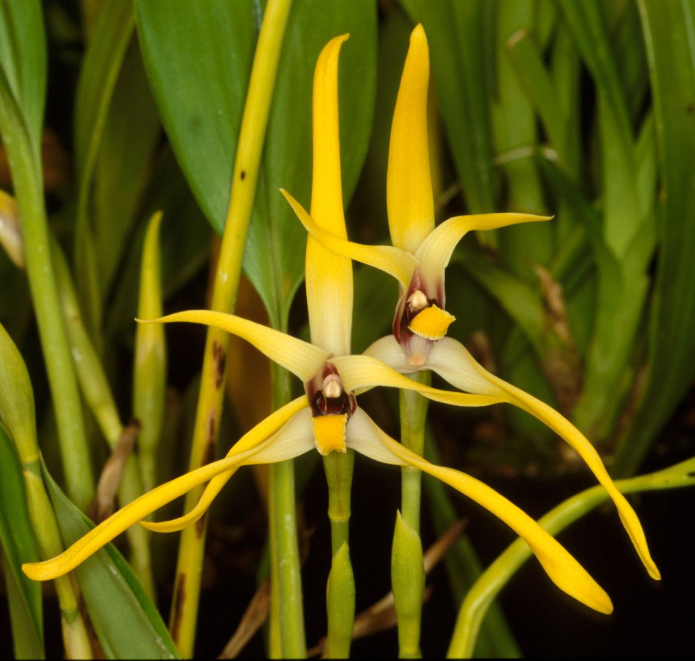
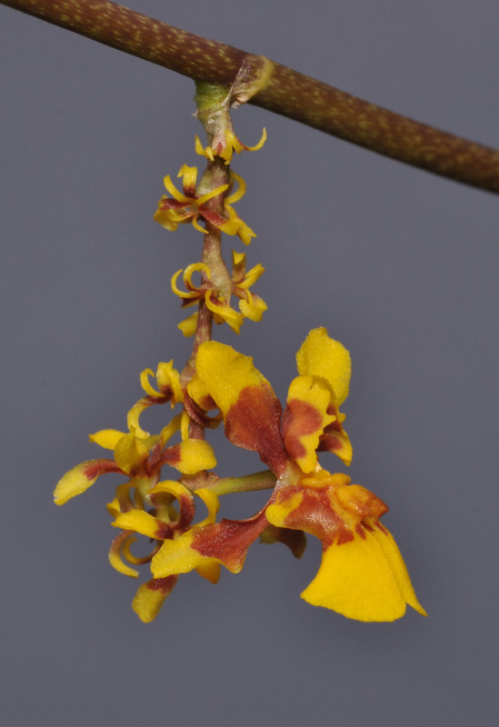
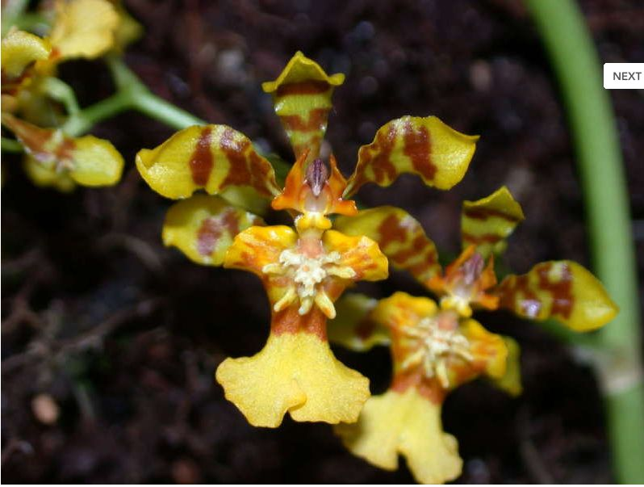
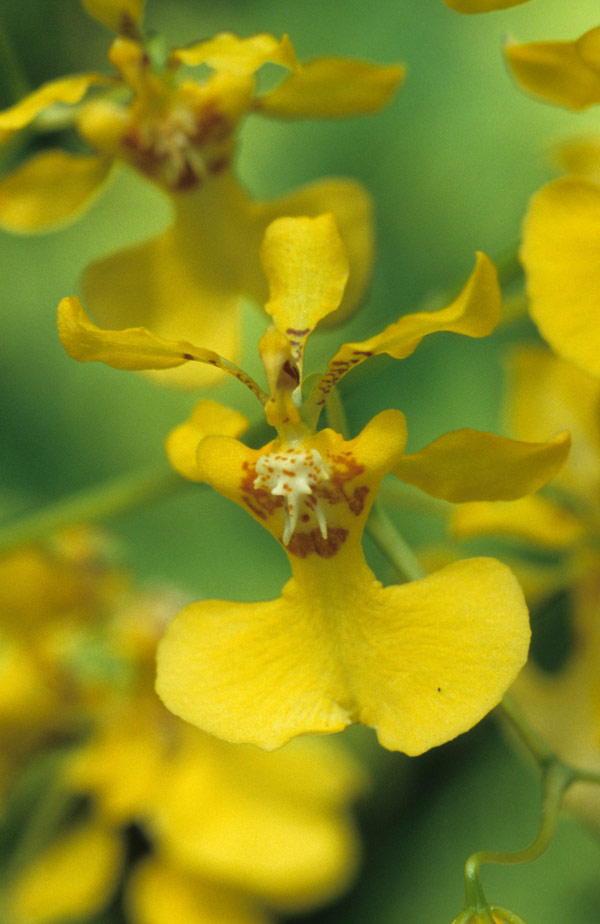
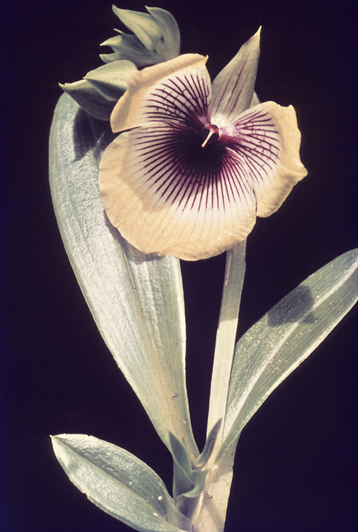

Cyrtochilum volubile
Esta hierba epífita es conocida de cuatro poblaciones localizadas en la vertiente oriental de los Andes.
Las recientes colectas sugieren un deterioro en el hábitat de las poblaciones cercanas a Moyobamba.
Lepanthes cloesii

De tamaño muy pequeño, encontrada a 2800 metros de altura con un tallo fino.
Lepanthes martinae

En elevaciones de 1900 a 2000 metros, se adapta al crecimiento en frío y florece en invierno.
Lepanthes sijmii

Esta hierba epífita es conocida sólo del material original, de un ejemplar procedente del valle del Huallaga, en los alrededores de Tingo María. Es probable que nuevas poblaciones se encuentren dentro del Parque Nacional Tingo María.
Maxillaria dillonii

Principalmente conocida en 3 localidades: cuencas del Alto Huallaga/Perené y en el 2006 fueron halladas en Amazonas y se encuentra en cultivo por su caracter ornamental.
Maxillaria platypetala
Descrita en el siglo XVIII, conocida en 4 regiones de Urubamba, Leoncio Prado y Oxapampa.
Oncidium ariasii

Registrada en los valles orientales de Chanchamayo y Huallaga, posiblemente también se encuentren en el Parque Nacional Cordillera Azul.
Oncidium retusum

Encontrada en 7 localidades, en bosques montanos y zonas interandinas, el ejemplar estudiando proviene de la cuenca del Mantaro.
Oncidium tipuloides

Esta hierba epífita, descrita a mediados del siglo XIX de un ejemplar procedente de la parte centro-oriental del país, ha sido registrada en tres localidades más, una de las cuales está
dentro de los límites del ahora Parque Nacional Cordillera Azul.
Telipogon urceolatus

Descrita en el 1923 por una orquídea recolectada en la cuenca del Panao, conocida en los bosques montanos y áreas interandinas de Huánuco, cuenca del Alto Huallaga.